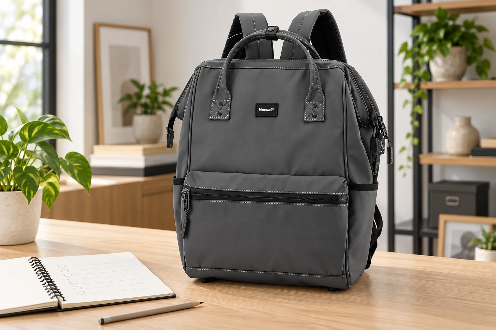
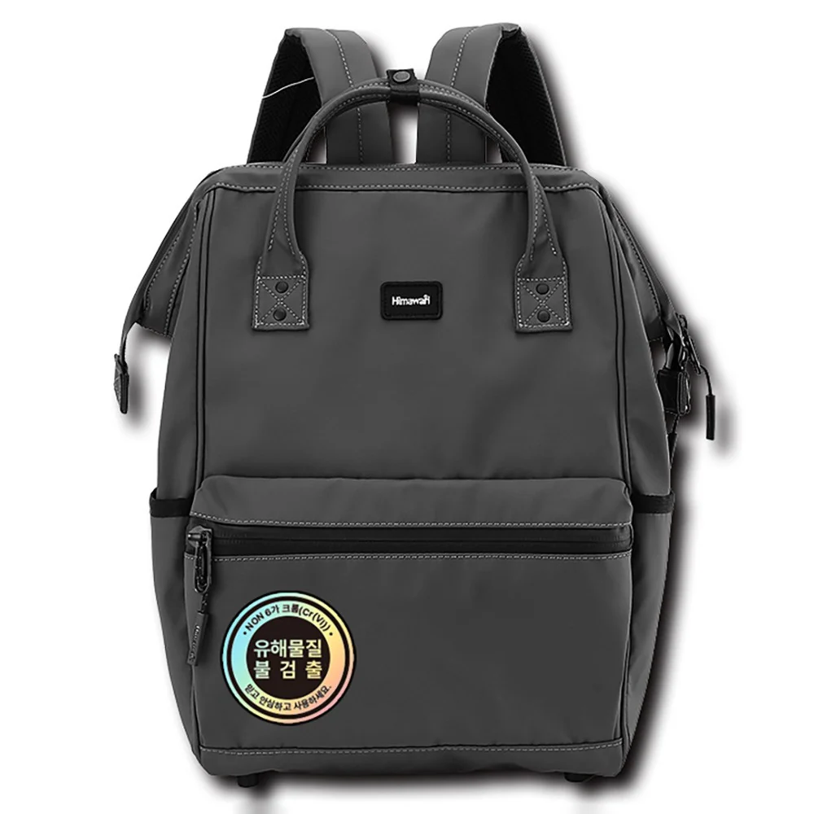

중고 백팩, 사진과 실물을 맞춰보는 순서

중고 백팩의 정면 사진은 거래를 생각하는 출발점이지만 현재 상태를 모두 보여주지는 않습니다. 같은 정도의 사용 흔적도 위치에 따라 받아들일 수 있는 범위가 달라집니다. 바깥의 얼룩보다 여밈의 움직임이 더 중요할 수 있고, 사진에 거의 보이지 않는 안쪽 상태를 먼저 확인하고 싶을 수도 있습니다. 실물을 볼 수 있다면 판매 설명과 실제 물건을 차례로 맞춰보며 자신의 사용 목적에 필요한 조건부터 살펴볼 만합니다.
만나기 전에는 모델과 색상, 판매자가 제시한 구성부터 확인합니다. 정면 사진만 있다면 뒷면과 바닥, 안쪽처럼 궁금한 위치의 사진을 요청할 수 있습니다. 수선하거나 교체한 부분이 있는지 묻고, 중요하게 확인한 내용은 거래 대화에 남겨둡니다. 판매자의 기억을 바탕으로 한 설명과 사진에서 보이는 상태를 구분하면 실제 만났을 때 다시 살필 부분이 정해집니다. 필요한 사진이 없는 상태에서 괜찮을 것이라고 짐작할 필요는 없습니다.
원래 사양과 현재 구성
판매 글에 표시된 구성과 현물의 구성을 같은 순서로 봅니다. 실제로 없는 포켓이나 부속품을 기대하기보다 설명에 적힌 것이 현재 가방에 있는지 확인하는 과정입니다. 모델 표시나 구매 자료가 남아 있는 경우에는 판매자에게 확인할 수 있지만, 자료 하나만으로 제품의 모든 상태가 증명되는 것은 아닙니다. 확인이 어려운 부분은 어떤 자료가 없는지 구체적으로 알아두고 구매 판단에 반영하면 됩니다.
지퍼와 연결부를 움직여보기
여밈을 시험할 때는 판매자에게 확인한 뒤 자연스럽게 열고 닫아봅니다. 원단이 끼거나 특정 위치에서 잘 움직이지 않는 부분이 있으면 힘으로 통과시키기보다 그 자리에서 판매자와 함께 확인합니다. 지퍼 손잡이가 느슨한지, 버클이 있는 경우 안내된 방식으로 결합과 분리가 되는지도 봅니다. 모든 가방에 같은 부품이 있는 것은 아니므로 실물의 실제 구조에 따라 필요한 동작을 확인하면 됩니다.
어깨끈과 손잡이의 연결부는 바깥에서 보이는 봉제선과 모서리부터 살핍니다. 실이 풀렸거나 형태가 한쪽으로 눌린 부분이 있다면 사진과 판매 설명에서 이미 확인한 상태인지 봅니다. 원인을 모르는 흔적을 현장에서 특정 사용 방식 때문이라고 단정하지 않습니다. 수선이 필요한지 판단하기 어렵다면 추가 확인이 필요한 부분으로 남길 수 있습니다. 직접 볼 수 있는 것과 별도 상담이 있어야 알 수 있는 것을 구분하는 과정입니다.
Himawari No.1884 제품 정보처럼 원래 제품을 참고할 자료가 있다면 모델을 대조하는 데 사용할 수 있습니다. 이 이 제품의 외부 크기는 가로 30 × 세로 45 × 폭 20cm입니다. 공식 사양은 모델 정보를 읽는 자료이고, 개별 중고품에 빠진 부속품이 있는지나 지금 어느 상태인지는 판매자의 물건에서 확인합니다. 공식 사진을 보았다는 이유로 현물의 여밈과 안감까지 확인했다고 생각하지 않는 것이 좋습니다.

빈 가방을 메어볼 수 있는지 판매자에게 묻고 허용된 범위에서 확인합니다. 평소 짐을 담았을 때의 결과까지 빈 상태로 알 수는 없으므로 착용 위치와 기본적인 동작 정도를 봅니다. 조절할 수 있는 부분이 있다면 사용 방법에 따라 움직여보되 판매자의 물건을 임의로 크게 변형하지 않습니다. 자신의 기기나 파일을 대조할 계획이라면 미리 협의하고, 가방을 긁거나 오염시킬 수 있는 조건을 피해서 확인하세요.
안쪽을 열고 보는 시간
큰 수납칸뿐 아니라 실제로 있는 작은 주머니도 열어봅니다. 안쪽 바닥과 모서리, 봉제선의 상태는 정면 사진에서 잘 보이지 않을 수 있습니다. 얼룩이나 가루, 남아 있는 소지품이 보이면 판매자에게 설명을 확인합니다. 향 제품이나 오래 보관한 냄새가 있다면 본인이 받아들일 수 있는 조건인지 판단하세요. 확인하려고 세제나 물을 사용해 닦아보는 방식은 현재 상태를 바꾸므로 거래 현장에서는 임의로 시도하지 않습니다.
사용 흔적의 위치를 자신의 용도와 연결하면 결정이 구체적입니다. 문서를 주로 담으려면 안쪽의 상태와 파일을 꺼낼 동작이 중요한 조건이 될 수 있습니다. 외출용으로 자주 메려 한다면 끈 연결부와 여밈의 움직임을 확인할 이유가 생깁니다. 특정 흔적 하나를 보고 모두 괜찮거나 모두 불량하다고 정하기보다 실제로 사용할 때 어떤 조건이 필요한지 생각해보세요. 받아들이기 어려운 부분이 있다면 그 이유를 구체적으로 설명할 수 있습니다.
결제 전에 확인할 차이
사진과 실물에서 다른 부분이 발견되면 결제 전에 함께 확인합니다. 거래를 마친 뒤 어떻게 처리할지에 관한 조건은 이용하는 거래 방식과 당사자 약속에 따라 따로 알아봅니다. 판매 설명에 없던 상태를 확인했다면 그 내용과 선택할 조건을 대화로 남길 수 있습니다. 가격을 다시 논의할지, 추가 확인 후 결정할지, 거래를 진행하지 않을지는 그 정보를 바탕으로 판단하면 됩니다.
현장에서 바로 결정해야 한다는 분위기가 있어도 확인할 항목을 생략할 필요는 없습니다. 만나기 전에 중요하게 보는 조건을 짧게 정해두면 점검 범위가 지나치게 길어지지 않습니다. 여밈과 연결부, 안쪽 상태를 확인한 뒤에는 열었던 부분을 닫고 원래 상태로 돌려놓습니다. 구매할 경우에는 실제로 받는 가방과 약속한 구성품을 함께 확인하세요. 별도 부속품을 나중에 보내기로 했다면 무엇을 어떻게 받을지도 구체적으로 남겨둘 수 있습니다.
가져온 뒤에는 자신의 물건을 넣기 전에 현재 상태와 관리 표시를 한 번 더 봅니다. 관리할 부분이 있다면 제품 안내에 맞는 범위에서 정리하고 확인되지 않은 처리를 바로 시도하지 않습니다. 거래에서 확인한 사진과 대화는 필요한 동안 보관할 수 있습니다. 다음 중고품을 볼 때에는 이번에 중요했던 조건을 참고하되 다른 모델에도 같은 구조가 있다고 가정하지 않습니다. 사진에서 찾은 질문을 실물에서 확인하는 방식이 다음 선택에도 도움이 됩니다.